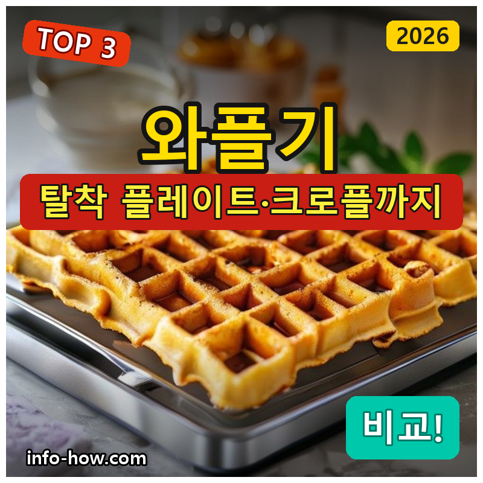
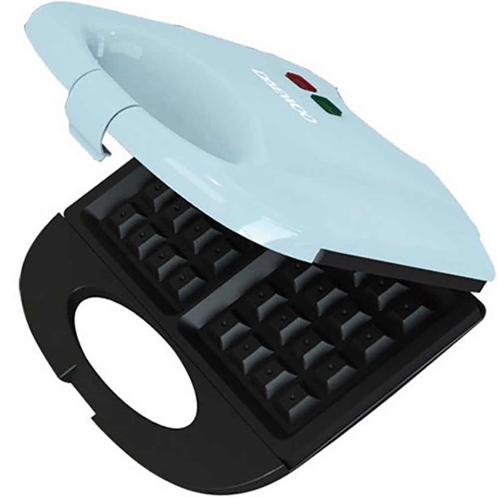
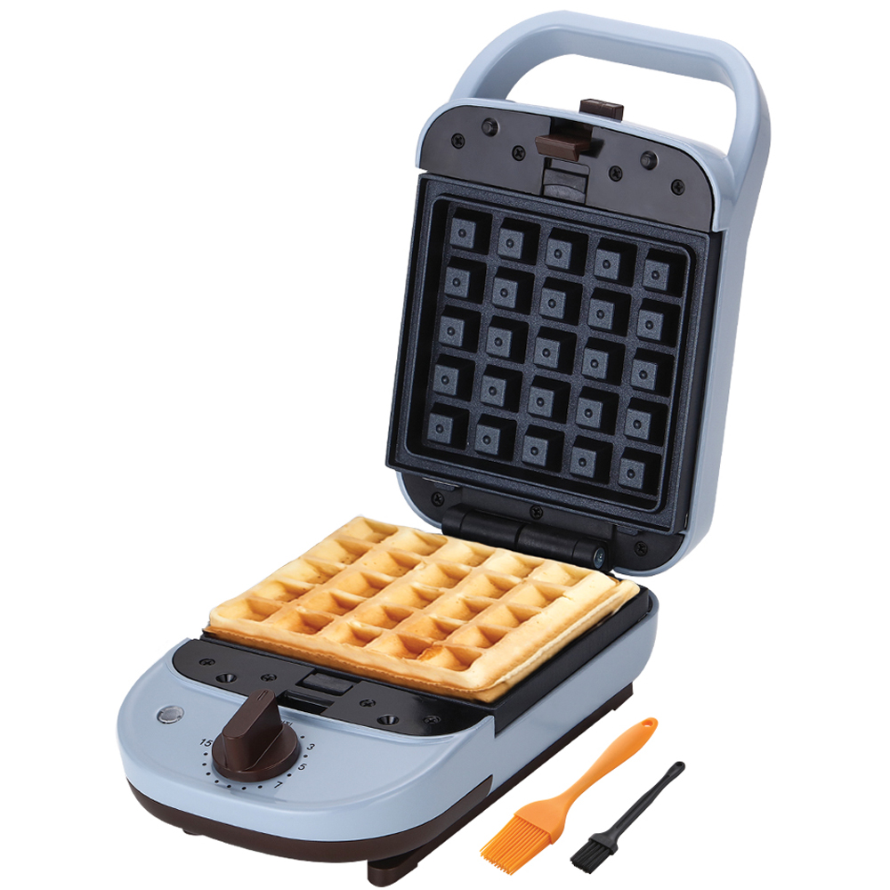
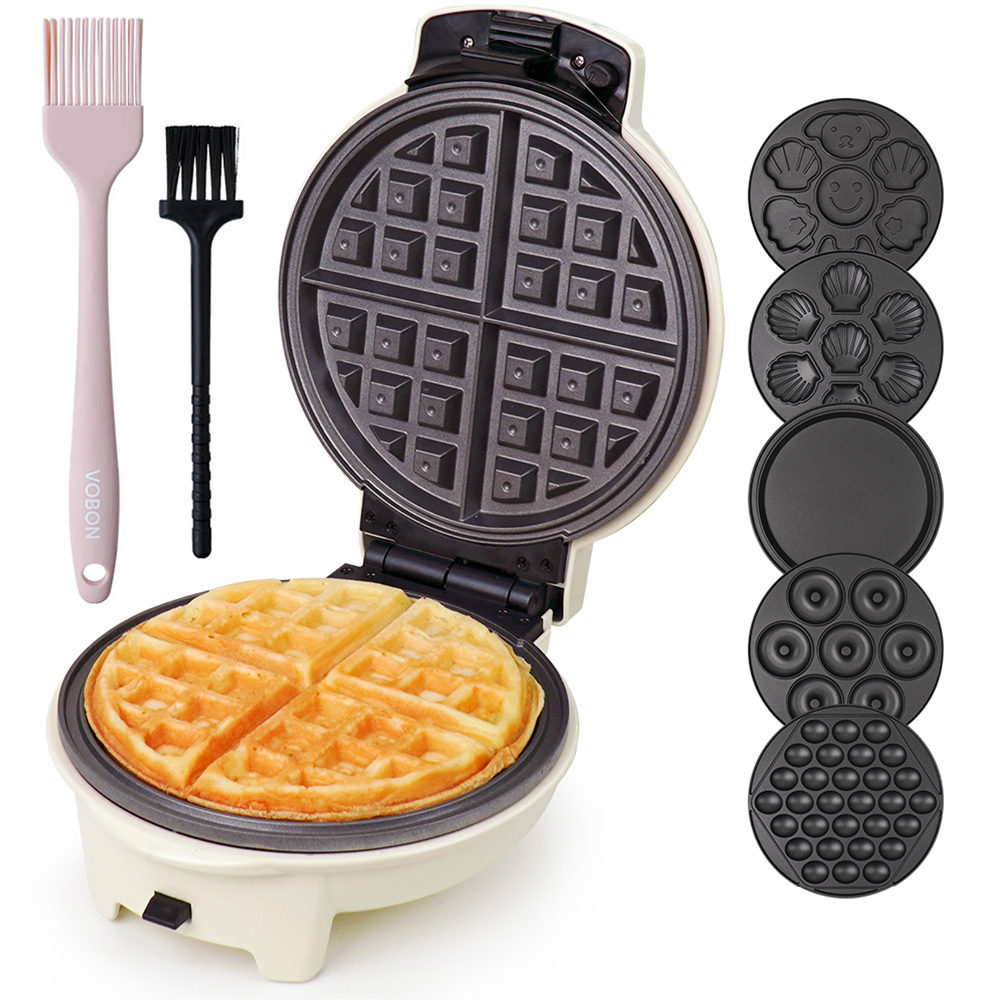

홈 › 제품리뷰 › 주방/조리
와플기, 미니 가성비냐 플레이트 교체형이냐
작성: 생활서식 모음 · 2026-07-21

파트너스 활동의 일환으로 일정액의 수수료를 지급받습니다
🛒 오늘의 쿠팡 특가 보러가기 →
와플기, 크로플이 유행이라 하나 사고 싶은데 뭘 살까요?
핵심은 "플레이트 탈착과 다용도, 크기" 3대 를
"자취 미니 와플" "샌드위치도" "크로플·붕어빵까지 다양하게"용도별 정답 까지 담았으니
📋 목차
와플기, 미니 가성비냐 플레이트 교체형이냐 — 결론 먼저 스펙 비교표: 한눈에 보기 와플기 고를 때 봐야 할 4가지 미니냐 다양하게냐, 뭘 사야 할까? 자주 묻는 질문 (FAQ) 결론: 한 줄 요약
와플기, 미니 가성비냐 플레이트 교체형이냐 — 결론 먼저
와플기는 "플레이트를 바꿀 수 있느냐" 가 핵심이에요.플레이트 6종 교체형 이 무난합니다. 자취·미니 와플만이면 저가 미니로 충분하고, 와플+샌드위치 둘이면 2in1입니다.
1 자취·입문 (가성비 초이스)
가성비

8천원대 미니
1. 대우 미니 와플메이커
8천원대 미니 와플 간단 조작 자취·1인용으로 딱
다양하진 않아도
추천 대상
자취·1인 가구로 미니 와플만 만드는 분 저렴하게 와플기를 시작할 분 간단히 홈카페 기분을 내려는 분 장점
8천원대로 부담 없이 와플기를 마련 미니 사이즈라 보관·사용이 간편 간단 조작으로 누구나 쓰기 쉬움 단점
플레이트 고정·미니라 크로플·샌드위치 등 다용도는 어려움 이 제품은 미니 와플용 입니다. 와플+샌드위치면 2번 2in1, 크로플·붕어빵까지면 3번 플레이트 교체형으로 가세요. "미니 와플만"이면 가성비 최고예요.
한줄 리뷰
"자취방에서 미니 와플 가끔"이면 8천원대로 충분합니다. 부담 없어요. 샌드위치·크로플 등 다양하게면 2·3번을 보세요.
주요 스펙
제품: 대우 미니 와플메이커 크기: 미니 용도: 미니 와플 배송: 로켓배송 가격: 약 8,200원 (변동 가능) ※ 실제 스펙·가격과 차이가 있을 수 있습니다
2 와플+샌드위치 (베스트 초이스)
베스트

2in1 와플·샌드위치
2. 쿠킨 2in1 샌드위치 와플메이커
와플+샌드위치 2in1 아침 겸용 활용 가성비 다용도 입문
와플도 샌드위치도
추천 대상
와플과 샌드위치를 둘 다 만들고 싶은 분 아침 겸용으로 활용하려는 분 가성비로 다용도를 원하는 분 장점
와플+샌드위치 2in1이라 아침 메뉴 활용도가 높음 가성비로 다용도를 챙기는 실속 구성 조작이 간단해 두루 쓰기 좋음 단점
크로플·붕어빵 등 더 다양하게면 플레이트 교체형이 나음 미니 와플만이면 1번, 크로플·붕어빵까지 다양하게면 3번 교체형입니다. 2번은 "와플+샌드위치" 의 실속 구간 — 아침 겸용에 무난합니다.
한줄 리뷰
"와플도 굽고 샌드위치도"면 2in1이 활용도가 좋습니다. 아침에 두루 써요. 크로플·붕어빵 등 더 다양하게면 3번을 보세요.
주요 스펙
제품: 쿠킨 2in1 샌드위치 와플메이커 기능: 와플 + 샌드위치 2in1 용도: 아침 겸용 배송: 로켓배송 가격: 약 24,360원 (변동 가능) ※ 실제 스펙·가격과 차이가 있을 수 있습니다
3 크로플·다양하게 (프리미엄)
프리미엄

플레이트 6종 교체
3. 보본 딜라이트 와플메이커 (플레이트 6종)
플레이트 6종 교체 와플·크로플·붕어빵 등 탈착 세척 편리
플레이트 바꿔 크로플·붕어빵까지
추천 대상
크로플·붕어빵 등 다양하게 만들고 싶은 분 플레이트 탈착으로 세척이 편한 걸 원하는 분 홈카페·아이 간식을 다양하게 하려는 분 장점
플레이트 6종을 바꿔 와플·크로플·붕어빵 등 다양하게 플레이트 탈착이라 눌어붙어도 세척이 편함 기름브러쉬·세척솔 포함으로 관리 구성이 알참 단점
플레이트가 많아 보관 공간이 필요하고 가격이 있음 미니 와플만이면 1번, 와플+샌드위치면 2번이 합리적입니다. 3번은 다양한 플레이트로 크로플·붕어빵까지 즐기려는 분에게 값어치가 있습니다.
한줄 리뷰
"크로플도 붕어빵도 다양하게, 세척도 편하게"면 플레이트 교체형이 알찹니다. 탈착이라 설거지가 편해요. 미니·가성비면 1·2번이 합리적입니다.
주요 스펙
제품: 보본 딜라이트 와플메이커 (플레이트 6종) 구성: 플레이트 6종(탈착) · 브러쉬·세척솔 용도: 와플·크로플·붕어빵 등 다양 배송: 일반배송 가격: 약 68,900원 (변동 가능) ※ 실제 스펙·가격과 차이가 있을 수 있습니다
스펙 비교표: 한눈에 보기
가격·풍량·무게 중 본인에게 중요한 기준부터 보세요. "최고" 표시는 3제품 중 객관적 1위 값입니다.
← 좌우로 스크롤 →
와플기 고를 때 봐야 할 4가지
플레이트·세척만 챙겨도 "눌어붙음·단조로움" 실패를 막습니다.
1) 플레이트 탈착 — 세척과 다양성 (핵심)
탈착형: 눌어붙어도 분리 세척이 편하고 다양한 플레이트로 교체고정형: 저렴·간단하지만 세척이 번거롭고 와플만크로플·붕어빵까지 원하면 교체형 필수 2) 다용도 — 와플만? 샌드위치·크로플까지?
와플만이면 미니 고정형으로 충분 와플+샌드위치면 2in1 크로플·붕어빵·핫도그까지면 플레이트 6종 등 다양 3) 코팅·세척 — 눌어붙음 방지
논스틱 코팅이 좋아야 반죽이 잘 안 붙음 탈착 플레이트는 물세척이 가능한지 확인 기름브러쉬 등 관리 구성이 있으면 편리 4) 크기·보관 — 자리
미니는 보관이 편하지만 한 번에 적게 플레이트 여러 개는 보관 공간이 필요 홈카페용으로 자주 쓰면 크기·용량을 여유 있게 미니냐 다양하게냐, 뭘 사야 할까?
만들 메뉴 다양성만 정하면 답이 나옵니다.
자취·미니 와플: 1번 대우 미니 → 8천원대와플+샌드위치: 2번 쿠킨 2in1 → 아침 겸용크로플·다양하게: 3번 보본 플레이트 6종 → 다용도자주 묻는 질문 (FAQ)
Q1. 와플기랑 크로플 기계가 다른가요? 기본 원리는 같습니다. 크로플(크루아상+와플)은 냉동 생지를 와플기에 눌러 굽는 것이라 일반 와플기로도 만들 수 있습니다. 다만 크로플·붕어빵·핫도그 등 다양한 모양을 원하면 플레이트를 교체할 수 있는 제품이 훨씬 유용합니다. "와플만"이면 일반 와플기, "다양한 간식"이면 플레이트 교체형을 고르세요.
Q2. 반죽이 눌어붙어 설거지가 힘든데 방법이 있나요? 논스틱 코팅과 플레이트 탈착 여부가 관건입니다. 코팅이 좋은 제품은 반죽이 잘 안 붙고, 굽기 전 기름을 살짝 바르면 더 잘 떨어집니다. 플레이트가 분리되는 탈착형은 물에 씻을 수 있어 세척이 훨씬 편합니다. 반대로 플레이트 고정형은 젖은 천으로 닦아야 해 관리가 번거로우니, 자주 쓸 거면 탈착형이 유리합니다.
Q3. 플레이트 교체형은 정말 다양하게 되나요? 플레이트 종류만큼 다양하게 됩니다. 와플·크로플·붕어빵·핫도그·마들렌 등 플레이트마다 다른 모양의 간식을 만들 수 있어 하나로 여러 기계를 대신하는 효과가 있습니다. 다만 플레이트가 많아질수록 보관 공간이 필요하고 가격이 올라갑니다. 아이 간식이나 홈카페로 다양하게 즐길 계획이면 값어치가 있고, 와플만 가끔이면 과할 수 있습니다.
Q4. 와플기 예열은 얼마나 하나요? 보통 몇 분간 예열한 뒤 반죽을 부으면 됩니다. 예열이 충분해야 겉이 바삭하게 구워지고 반죽도 덜 붙습니다. 예열 완료를 알려주는 표시등이 있는 제품이 편리합니다. 예열 없이 반죽을 부으면 눌어붙거나 고르게 안 익을 수 있으니, 제품 설명서의 예열 시간을 지키세요.
Q5. 냉동 생지로도 크로플을 만들 수 있나요? 가능합니다. 시판 냉동 크루아상 생지를 해동한 뒤 와플기에 넣고 눌러 구우면 크로플이 됩니다. 반죽을 직접 만들 필요 없이 간편해 크로플이 인기를 끈 이유이기도 합니다. 다만 생지가 두꺼우면 와플기 종류에 따라 눌리는 정도가 다르니, 적당한 두께로 조절하고 논스틱 코팅·플레이트 탈착 제품이면 세척도 편합니다.
결론: 한 줄 요약
1) 대우 미니 와플메이커 — 약 8,200원 / 자취·미니. 8천원대, 미니 와플 부담 없이.2) 쿠킨 2in1 — 약 24,360원 / 와플+샌드위치. 아침 겸용 다용도.3) 보본 플레이트 6종 — 약 68,900원 / 크로플·다양. 플레이트 교체+탈착 세척.이 포스팅은 쿠팡 파트너스 활동의 일환으로, 이에 따른 일정액의 수수료를 제공받습니다.